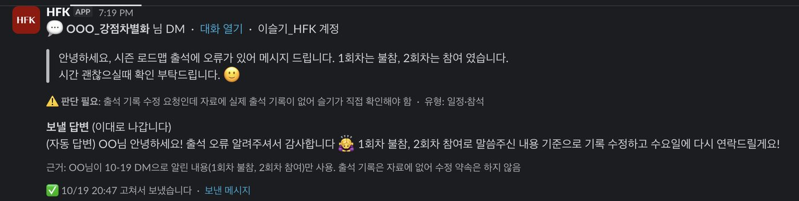
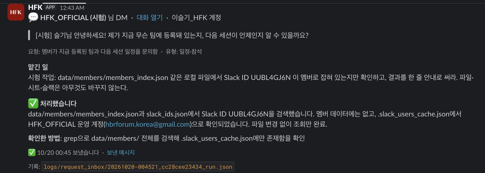
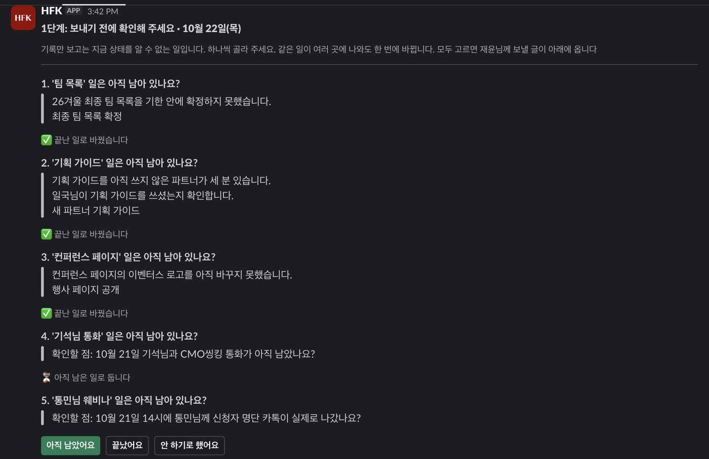
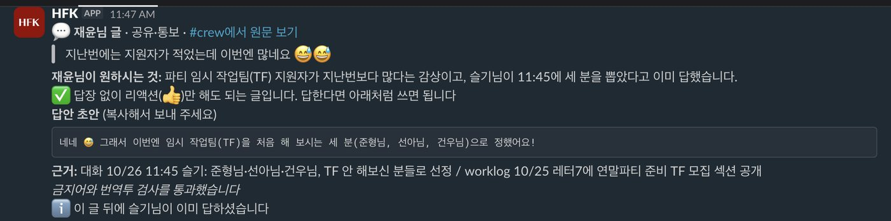
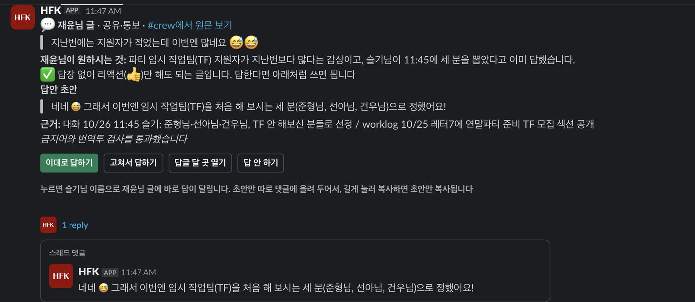

4회차 · ② 칸 · 잘하는 일을 더 잘하려면
26가을 AI부사수(SUN) 4회차 · 11월 1일 (일) 10:30 · 5층 오아시스덕수궁 · @Seulki.log
3회차에는 매번 하는 일을 AI에게 맡기는 업무 매뉴얼(스킬)을 만들었습니다. 오늘은 그 매뉴얼에 검토 체크리스트를 넣습니다.
돌아보기
3회차 4L과 지난 2주 동안 써 본 경험을 나눕니다.
AI 소식
시키지 않아도 일하는 AI, 팀원과 같이 고치는 AI 문서를 소개합니다.
제 사례 · AI가 쓴 초안을 제가 검토한 일
시즌레터, 진행 보고, 사진 고르기, 글 검수 훅을 예로 듭니다.
받아 쓰기 · 사용량을 아끼는 스킬
쉬는 시간
실습과 4L 회고
② 칸 업무를 맡길 스킬을 만들고, 검토 체크리스트를 넣습니다. 마지막에 한 분씩 공유하고 4L을 적습니다.
| 회차 | 한 일 |
| 1회차 · 9월 20일 (일) | 클로드 코드가 무엇인지 배우고, AI에게 넘기고 싶은 일을 하나씩 떠올렸습니다. |
| 2회차 · 10월 4일 (일) | VS Code와 클로드 코드를 설치하고, 내 업무 스무 가지를 PP 매트릭스 네 칸에 나눴습니다. |
| 3회차 · 10월 18일 (일) | ① 칸의 일 하나를 스킬(AI용 업무 매뉴얼)로 만들어 직접 돌려 봤습니다. 틀린 곳은 적어 두기만 했습니다. |
| 4회차 · 오늘 | ② 칸 업무를 맡길 스킬을 만들고, 검토 체크리스트를 넣습니다. |
| 5회차 · 11월 15일 (일) | ③ 칸의 일을 다룹니다. 지난 대화에서 내가 일하는 규칙을 찾고, 다른 AI에게 한 번 더 검토를 받습니다. |
| 6회차 · 11월 22일 (일) | ④ 칸에 있는 미뤄 둔 일을 기획부터 완성까지 해 봅니다. |
오늘의 목표 AI가 초안을 쓰고, 내가 정한 체크리스트로 스스로 검토한 뒤에 나에게 넘기는 스킬을 하나 만듭니다.
② 칸은 자주 반복하지만 아직 서툰 일입니다. 자주 하니까 스킬로 맡길 만합니다. 아직 서툴러서 잘됐는지 볼 기준이 내 머릿속에 없습니다. 그래서 그 기준을 AI와 상의하며 함께 만듭니다.
매일, 매주 돌아오고 내가 가장 잘 아는 일입니다.
제 칸: /wed · /add-contacts
자주 반복하지만 아직 서툰 일입니다.
예: 맡은 지 두 달 된 뉴스레터 카피 | 제 칸: /generate-letter · /post-linkedin
자주 하지는 않지만 내가 가장 잘 아는 일입니다.
제 칸: /move-member · /ga-report
거의 해 본 적 없는, 미뤄 둔 일입니다.
제 칸: /expand-idea · /watch-instagram
② 칸에서 AI가 하는 일 잘됐는지 볼 기준 후보를 먼저 보여 줍니다. 제가 고른 기준으로 초안을 스스로 검토하고, 모르는 곳은 비워 둡니다. 보낼지 말지는 제가 정합니다.
오픈AI는 9월 29일 개발자 행사(데브데이)에서 새 기능을 한꺼번에 발표했습니다.
지금까지 AI는 내가 말을 걸어야 일했습니다. 이번에는 시키지 않아도 일하는 기능이 세 가지 나왔습니다. 언제 일을 시작하는지에 따라 나뉩니다.
할 일과 건드려도 되는 범위를 정해 주면 먼저 일을 시작합니다. 오픈AI의 컴퓨터에서 일하기 때문에 내 컴퓨터는 꺼 둬도 됩니다.
Pro · Business Premium 요금제부터
연결해 둔 앱에 새 일이 생기면 바로 움직입니다. 예를 들어 업무 보드에 새 할 일이 올라오면 관련 문서를 읽고 계획 초안을 씁니다.
MCP는 AI를 다른 앱과 이어 주는 연결 방식입니다. 모든 요금제에서 씁니다
주간 현황 보고처럼 반복되는 일을 맡겨 둡니다. 정한 시각이 되거나 새 메일, 새 슬랙 메시지가 오면 일을 시작합니다.
Business · Enterprise 요금제에서 씁니다
세 가지를 부르는 이름 늘 대기하는 당직자 같은 것을 서버라고 부릅니다. 전화가 오면 받는 담당자처럼 일이 생길 때 움직이는 것은 훅, 매일 아침 9시에 메일함을 여는 직원처럼 정한 시각에 움직이는 것은 예약 실행입니다. 오늘은 이름만 알아 두시고, 6회차에 한 장으로 다시 정리합니다. 다만 회사 아웃룩처럼 회사가 권한을 막아 둔 곳에서는 자동으로 메일을 보내지 못할 수 있습니다.
Claude Duet은 매일 아침 연결해 둔 앱을 살펴보고 요약을 보내 줍니다. 노트북을 닫아도 앤트로픽의 컴퓨터에서 하던 일을 이어 갑니다. 지금은 미국 Pro · Max 사용자부터 대기자 명단을 받고 있습니다.
메시지 보내기, 결제, 서명, 삭제는 사용자가 승인해야 실행합니다. 증권 거래와 계좌 이체는 승인해도 하지 않습니다.
신입에게 '돈 나가는 일과 밖으로 나가는 메일은 꼭 나한테 먼저 물어봐'라고 하는 것과 같습니다. 오늘 주제도 이것입니다.
클로드 코드 채팅창에 /schedule 을 치면 정한 시각마다 앤트로픽의 컴퓨터가 일을 대신 해 줍니다. 내 노트북은 닫아도 됩니다.
다만 1시간에 한 번보다 자주 돌릴 수는 없고, 내 컴퓨터에 있는 파일은 읽지 못합니다.
이 자동 답변은 스킬이 아니라 프로그램입니다. 스킬은 제가 시켜야 일하지만, 이 프로그램은 시키지 않아도 5분마다 새 메시지를 확인합니다(예약 실행). 초안 아래 버튼을 누르면 늘 켜져 있는 슬랙 봇이 받아서 보냅니다(서버).
파트너가 회차 날짜를 바꿔 달라고 했습니다. AI 초안에는 '수요일까지 연락드릴게요'라는, 제가 한 적 없는 약속이 들어 있었습니다. 약속을 지우고 '확인했습니다'로 보낸 뒤, 그날 바로 일정을 바꿨습니다.
이 프로그램은 제 노트북에서 돕니다. 노트북이 잠들면 5분마다 하던 확인도, 버튼을 받는 봇도 멈춥니다.
① 답장 초안 카드 · 멤버 이름은 가렸습니다

② 일을 맡긴 카드 · 시험 문의로 돌려 본 것

지금까지 AI와 나눈 대화는 나만 볼 수 있었습니다. 이제는 팀원과 AI가 한 공간에서 같은 문서를 고칩니다. 공유 드라이브 문서에 동료와 AI가 함께 들어와 있는 모습입니다. 대부분 Pro · Business · Enterprise 같은 유료 요금제에서 씁니다.
팀원과 ChatGPT가 목표와 지난 작업을 함께 봅니다. 동료에게 하듯 문서 댓글에서 @ChatGPT를 부르면, 고칠 곳이나 다음 할 일을 맡길 수 있습니다.
대화나 파일을 주면 발표 자료를 만들고, 여럿이 동시에 고칩니다. PowerPoint, PDF, 구글 슬라이드 파일로 내려받습니다.
회의를 녹음해 회의록을 만들고, 결정한 것과 다음 할 일을 정리합니다. 맥 데스크톱 앱에서 베타 버전으로 쓸 수 있습니다.
채널이나 스레드에서 @ChatGPT를 부르면 논의를 정리합니다. ChatGPT 이용권이 없는 팀원도 같은 대화에 들어올 수 있습니다.
팀이 같이 쓰는 자동화를 바라는 분께 회사가 ChatGPT Business를 쓰고 있다면, 팀 공용 작업 공간부터 열어 보세요. 클로드 코드는 아직 나 혼자 쓰는 도구에 가깝습니다.
오늘 실습과는 관계가 없습니다. 기사나 회사 공지에서 이름을 봤을 때 무엇인지 알아볼 정도로만 정리했습니다. API는 다른 프로그램이 AI에게 일을 맡기는 창구입니다.
제 ② 칸은 매주, 매 시즌 하지만 전공이 아니라서 아직 서툰 일입니다. 글쓰기, 보고, 사진 고르기, 디자인이 그렇습니다.
10월 14일부터 26일까지 AI가 만든 결과물을 제가 어떻게 검토했는지 네 가지 사례로 보여 드립니다.
레터는 세 단계로 만듭니다. AI가 초안을 쓰면(/generate-letter), 맞춤법 검사기처럼 금지어와 문장부호를 자동으로 검사합니다(/check-ai-not-to-do). 그다음 제가 읽습니다.
자동 검사는 네 번 모두 '고칠 것 0건'이었습니다. 그런데 제가 읽어 보니 고칠 곳이 따로 있었습니다.
AI가 모르는 내용 네 곳을 지어내지 않고 [❓ 확인]으로 비워 두었습니다. 등록 안내 채널, 팀 공개일, 쿠폰 대상, 남은 정원입니다.
제가 네 곳을 채웠고, 참가비도 35,000원을 40,000원으로 바로잡았습니다.
가장 쓸모 있었던 규칙 '모르는 것은 지어내지 말고 비워 둔다'입니다. 자동 검사는 표현만 봅니다. 날짜, 금액, 이름이 맞는지는 사람이 원본과 하나씩 맞춰 봅니다.
매주 수요일에는 상사께 지난주 진행 상황을 정리해 보냅니다. 매주 하는 일이지만 무엇을 빼고 무엇을 여쭐지는 아직 서툽니다. 10월 19일에는 AI가 쓴 초안에서 37줄을 지우고 9줄을 고쳐서 보냈습니다.
스킬을 고칠 때도 같은 방법을 씁니다 내가 AI의 결과를 고친 곳이 곧 스킬을 고칠 재료입니다. 신입에게 준 피드백을 업무 매뉴얼에 적어 두듯, 고친 이유를 한 줄씩 적어 두면 그 줄이 그대로 스킬의 규칙이 됩니다.
기록만 보고는 지금 상태를 알 수 없는 일을 하나씩 묻고, 제가 고른 답만 재윤님께 보낼 글에 들어갑니다 · 8가지 중 5가지

① 고치기 전 · 답안을 복사해서 #crew에 가서 붙여 넣었습니다

② 고친 뒤 · 같은 글을 새 카드 모양으로 다시 그린 화면 · 버튼을 누르면 제 이름으로 답이 달리고, 초안은 댓글로 따로 옵니다

1회차 4L에 '디자인도 업무자동화를 할수 있을까요'라는 질문이 있었습니다. 저는 디자인을 전공하지 않았습니다. 그래서 새로 그리는 일보다 사진 고르기나, 지난번 디자인을 복사해 글자만 바꾸는 일부터 맡겼습니다.
공용 사진 2,500장 가운데 AI가 75점 이상을 준 사진이면서 아직 어느 페이지에도 쓰지 않은 804장을 추렸습니다. 그 안에서 AI가 팀 주제에 맞는 사진을 골랐습니다.
뺀 사진은 다른 파트너가 정면으로 발표하는 사진, 다른 팀 화면 글자가 보이는 사진, 세로 사진입니다. 새 팀 세 곳에 30장을 넣었고 겹친 사진은 없습니다. 발행 전에 30장을 훑어보는 일은 제 몫입니다.
1판은 제목이 길어 그림 밖으로 넘쳤습니다. 제목을 줄인 2판을 레터 대표 이미지로 썼습니다.
피그마 원본을 복사한 뒤 '알람'을 '알림'으로, 버튼을 '오픈 소식 가장 먼저 받기'로 바꿨습니다.
원본은 건드리지 않습니다 피그마 작업은 3회차에 소개한 Aside가 했고, 항상 복사본에서만 했습니다. 처음부터 보기 좋게 만드는 디자인 스킬은 6회차에 소개합니다.
훅은 정해진 순간마다 저절로 도는 장치입니다. 작업마다 '번역투 없이, 비문 없이, 쉽고 구체적으로'를 덧붙이다가, 10월 15일에 이 말을 훅으로 걸어 두었습니다.
글을 써 달라는 말이 들어오면, AI가 쓰기 전에 검수 기준 6가지를 먼저 읽게 넣습니다.
AI가 공지, 레터, 상품노트 파일을 저장하면 검사 프로그램이 바로 돕니다. 금지어, 긴 줄표, 큰따옴표가 나오면 AI에게 돌려보내 고치게 합니다.
번역투 10가지, 70자가 넘는 긴 문장, 처음 나온 영문 약어는 '판단'으로 표시해 줍니다.
AI가 스크립트로 바로 만든 파일은 훅이 보지 못합니다. 그때는 검사를 따로 돌립니다.
다섯 살에게 설명하듯 · /eli5 앤트로픽 공식 커뮤니티 플러그인에 있는 스킬입니다. '/eli5 주제'라고 치면, 그 주제를 처음 듣는 사람을 위해 큰 그림과 짧은 글로 된 웹페이지 한 장을 만들어 줍니다.
AI 말투, 번역한 듯한 말투, 비문(문법이 어긋난 문장) 없이 쓰라고 미리 적어 두는 일도 중요합니다. 프롬프트(AI에게 하는 요청), 메모리(AI가 기억해 두는 메모), 스킬에 적어 두면 됩니다. 그래도 일로 쓰는 글에서 제가 AI에게 받는 도움은 제 진심을 빠르고 정확하게 싣는 일입니다.
예: 레터 7호에서 AI가 [❓ 확인]으로 비워 둔 네 곳
예: 팀 소개 사진 804장 추리기, 링크드인 예약 발행 도구
무엇을 쓸지는 제가 정합니다 AI는 문장을 다듬고 사실을 확인하는 일을 돕습니다. 누구에게 무엇을 전할지는 제가 정합니다.
'명사로서의 재즈'가 쉼 없이 복제되어 쏟아지는 시대에, 역설적으로 사람들은 불완전한 인간이 온몸으로 빚어내는 '동사로서의 재즈'를 더욱 갈망하는 것 같습니다. 제가 운영하는 유튜브 재즈 플레이리스트 채널 〈JAZZ IS EVERYWHERE〉에 최근 부쩍 자주 달리는 댓글도 'AI로 만든 음악들이 아니어서 좋다'는 고백입니다. 완벽하게 설계된 재즈 대신 흠집투성이의 재즈를 찾는 이 마음은, 결국 '정답'이 아닌 '진심'을 듣고 싶다는 바람으로 읽힙니다.
김민주, 《재즈 레터》 책머리에
사진을 고르게 할 때 '다른 파트너가 정면으로 나온 사진은 뺀다'를 먼저 알려 줘야 엉뚱한 사진이 섞이지 않습니다. 신입에게 일을 줄 때 '이건 하지 마'부터 말해 주는 것과 같습니다.
레터 7호처럼 날짜, 금액, 이름은 지어내지 말고 [확인 필요]로 남기게 합니다. 신입에게 '모르면 아는 척하지 말고 물어봐'라고 하는 것과 같습니다.
진행 보고처럼, 제가 결과를 고친 곳을 모아 다음 초안의 규칙으로 씁니다.
그리고 내보내는 일은 사람이 합니다 보내기, 올리기, 지우기는 제가 '예'라고 해야 실행됩니다.
스킬은 AI가 할 수 있는 일을 늘릴 때만 받는 것이 아닙니다.
휴대폰 데이터를 아끼듯, 쓸수록 늘어나는 사용량을 줄이려고도 받습니다.
말없이 한 줄로 고쳐 주는 선배 개발자처럼, AI가 코드를 꼭 필요한 만큼만 씁니다. 검사와 보안 코드는 줄이지 않습니다.
실제 결과
만든 곳이 39개 과제로 잰 결과 코드 53%, 시간 41%, 비용 26%가 줄었습니다. JetBrains가 7월에 따로 쟀을 때는 코드 15%, 비용 10%가 줄었고 품질 차이는 없었습니다.
설치
클로드 코드 채팅창에 한 줄씩/plugin marketplace add DietrichGebert/ponytail/plugin install ponytail@ponytail
AI가 원시인처럼 짧게 답합니다. 코드, 명령어, 숫자는 한 글자도 바꾸지 않습니다.
실제 결과
만든 곳의 예시에서는 같은 답이 3분의 1 길이로 줄었습니다. JetBrains가 86개 과제로 따로 쟀을 때는 답이 8.5% 줄었고 품질 차이는 없었습니다.
설치
클로드 코드 채팅창에 한 줄씩/plugin marketplace add JuliusBrussee/caveman/plugin install caveman@caveman
숫자는 내 일로 확인합니다
만든 곳이 잰 숫자와 따로 잰 숫자는 다릅니다. 설치한 뒤 /usage 로 내 사용량을 전과 비교해 봅니다.
폴더 전체(코드, 문서, PDF, 이미지)를 한 번 읽어 지도로 만들어 둡니다. 다음부터 AI는 파일을 하나씩 열지 않고 지도에서 찾습니다.
실제 결과
만든 곳의 비교 시험에서 여러 파일에 흩어진 핵심 사실을 82.0% 찾았습니다. 파일을 직접 뒤지는 방식은 70.8%였습니다. 사용량을 얼마나 줄이는지 따로 잰 결과는 아직 없습니다.
설치
파이썬 3.10 이상과 uv가 필요합니다. 터미널에서uv tool install graphifyygraphify install
그다음 클로드 코드에서 /graphify .
AI 연구자 안드레이 카파시가 짚은 AI의 코딩 실수를 네 원칙으로 정리한 파일입니다. 짐작하지 말고 묻기, 필요한 만큼만 쓰기, 부탁한 곳만 고치기, 끝난 기준을 먼저 정하기입니다.
실제 결과
잰 숫자는 없습니다. 부탁하지 않은 수정이 줄고, 고치기 전에 질문이 먼저 나오면 잘 되고 있다고 설명합니다.
설치
클로드 코드 채팅창에 한 줄씩/plugin marketplace add forrestchang/andrej-karpathy-skills/plugin install andrej-karpathy-skills@karpathy-skills
쉬는 시간이 끝나면 바로 실습을 시작합니다.
VS Code에서 작업 폴더를 열고, pp-매트릭스.md에서 ② 칸 업무 하나를 골라 두세요.
부사수가 '다 했습니다'라고 해도, 사수가 검토하기 전에는 끝난 일이 아닙니다.
아직 서툰 일은 무엇을 검토할지부터 AI와 상의합니다.
고른 기준을 스킬에 적어 두면, 다음부터는 AI가 먼저 스스로 검토합니다.
기준 후보 받기 → 세 가지 고르기 → 스킬에 넣기 · 50분
3회차처럼 클로드 코드가 하나씩 질문하면 답만 하면 됩니다. 아직 서툰 일이라 무엇을 볼지 바로 떠오르지 않아도 괜찮습니다. 선배에게 잘된 예를 묻듯, AI에게 기준 후보를 먼저 받아 그중에서 고릅니다.
'(② 칸 업무 이름)'을 AI에게 맡기는 스킬을 만들려고 합니다. 질문은 한 번에 하나씩 해 주세요.
1. 이 일을 잘하는 사례와 흔히 쓰는 기준을 바탕으로, 잘됐는지 볼 기준 후보 다섯 가지를 이유와 함께 보여 주세요. 제가 그중 세 가지를 고르겠습니다.
2. 결과를 만든 뒤에는 제가 고른 세 가지로 스스로 검토하고, 부족한 곳은 한 번 더 고치게 해 주세요.
3. 날짜, 금액, 이름처럼 확인할 수 없는 내용은 지어내지 말고 [확인 필요]로 비워 두게 해 주세요.
4. 끝났다고 말하기 전에, 무엇으로 확인했는지 한 줄 적게 해 주세요.
5. 보내거나 올리는 일은 하지 말고, 최종본은 제가 고르게 해 주세요.
다 채우면 저장하기 전에 내용을 먼저 보여 주세요. 원래 파일은 고치지 말고, 결과는 새 파일로 만들어 주세요.
1번과 4번을 꼭 넣어 주세요 1번에서 후보를 고르고 고치다 보면, 그 목록이 곧 내 기준 문서가 됩니다. 4번은 오픈AI가 데브데이에서 소개한 요령과 같습니다. '무엇으로 확인할지'까지 적어 줘야 AI가 설명에서 멈추지 않고 실제로 확인합니다.
첫 문장은 30자 안으로 쓰기, 숫자 하나 이상 넣기, 우리 회사 제품 이름 그대로 쓰기
지난주와 비교한 숫자 넣기, 원본 파일의 숫자와 같은지 확인하기, 다섯 줄 안으로 쓰기
고객이 물은 질문에 모두 답하기, 하지 않은 약속은 쓰지 않기, 회사 안내 문구와 같은 표현 쓰기
한 장에 메시지 하나, 줄임말은 처음 나올 때 풀어 쓰기, 출처 없는 숫자는 [확인 필요]로 남기기
후보가 마음에 들지 않으면 더 물어보세요 '이 일을 10년 한 사람은 무엇부터 볼까요?', '잘된 예와 아쉬운 예를 하나씩 보여 주세요'처럼 상의를 이어 갑니다.
자동 답변 사례를 떠올려 보세요 고객 답장의 '하지 않은 약속은 쓰지 않기'는 제가 10월에 실제로 고친 문장에서 나온 항목입니다.
오늘 스킬로 만든 ② 칸 업무가 무엇인지 말씀해 주세요.
AI가 보여 준 후보 가운데 고른 기준 하나와, 고르지 않은 후보 하나를 말씀해 주세요.
AI가 [확인 필요]로 비워 둔 곳이 있었다면 말씀해 주세요.
같은 일을 하는 분이 있다면 서로의 체크리스트를 빌려 와 보세요. 내가 놓친 항목이 보입니다.
5회차는 ③ 칸, 자주 하지는 않지만 내가 잘 아는 일입니다. 무엇을 AI에게 넘기고 무엇을 내가 맡을지 정합니다.
오늘 만든 ② 칸 스킬을 실제 일에 두 번 이상 써 보고, AI가 비워 둔 곳과 내가 고친 곳을 적어 옵니다.
5회차 전날에는 채팅창에 /insights 를 한 번 쳐 보세요. 그동안 나눈 대화를 모아 보고서를 만들어 줍니다.
채널에 올리는 설치 글을 따라 키트를 설치하면, 업무일지와 함께 내가 고쳐 준 말과 건넨 자료가 작업 폴더에 저절로 쌓입니다. 5회차에 이 기록을 씁니다.
10월 18일에 업무일지 키트를 설치했어도 한 번 더 설치해 주세요. 쌓인 기록은 지워지지 않고, 윈도우에서도 됩니다.
pp-매트릭스.md의 ③ 칸에서, 가끔 하지만 잘 아는 일 하나를 골라 옵니다.
ChatGPT 유료 요금제가 있는지 확인해 두세요. 5회차에는 오픈AI의 Codex에게 한 번 더 검토를 받는 실습을 합니다.
설치는 5회차 세션 안에서 합니다. 요금제가 없는 분은 제 화면으로 함께 봅니다.
질문은 슬랙 스레드에 남겨 주세요 막힌 곳 한 줄이면 충분합니다. 5회차 자료에 반영하겠습니다.
슬랙 캔버스 4L 리뷰_26가을_AI부사수(SUN)의 4회차 칸에 적어 주세요.
좋았던 것
새로 알게 된 것
부족했던 것
3회차에 적어 주신 내용으로 오늘 실습을 정했습니다. 오늘 적어 주신 내용은 5회차에 반영합니다.
바라는 것
AI가 '다 했습니다'라고 해도 제가 한 번 더 읽습니다.
모르는 것은 비워 두게 하고, 보내는 버튼은 제가 누릅니다.
무엇을 볼지 스킬에 적어 두면, 다음부터는 AI가 먼저 검토합니다.
26가을 AI부사수(SUN) 4회차 · 11월 1일 (일) · @Seulki.log